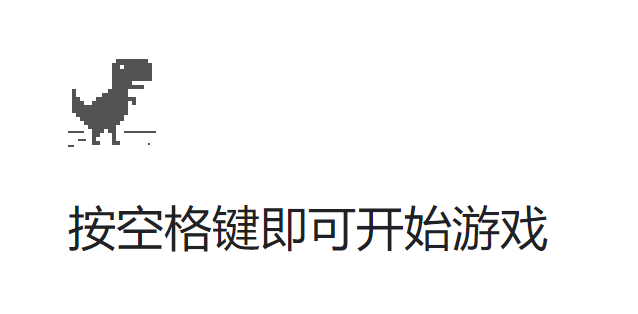
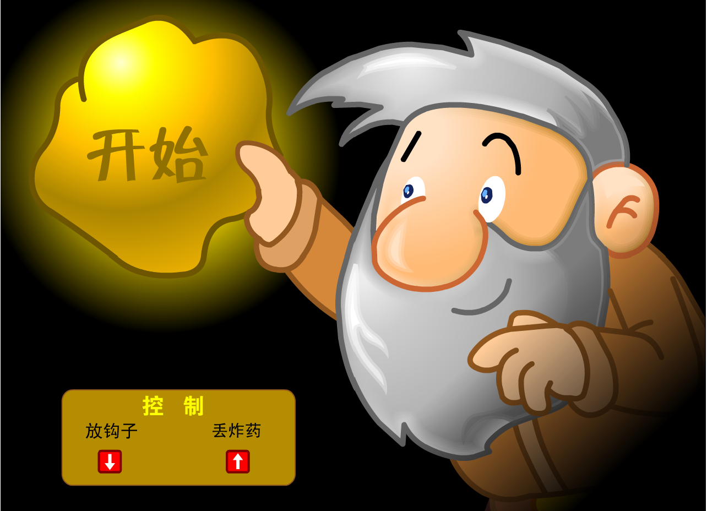
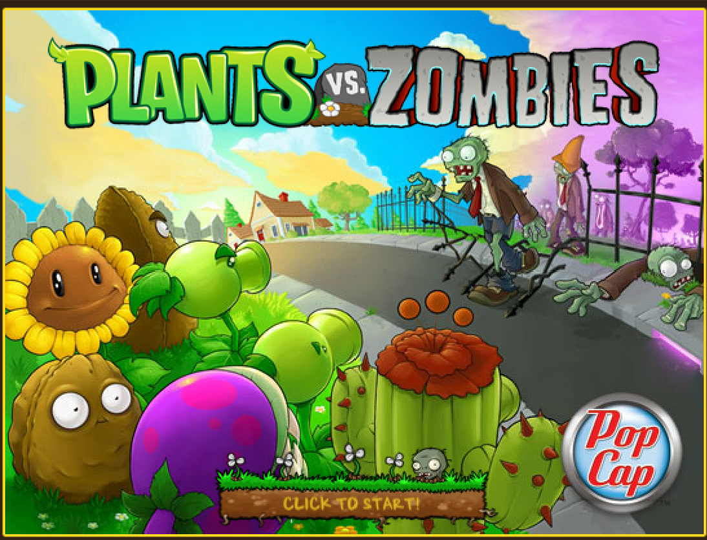
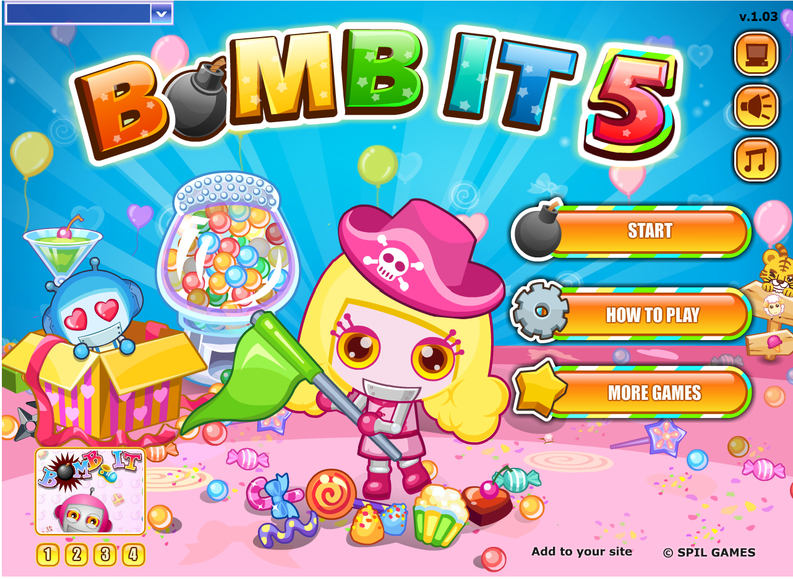
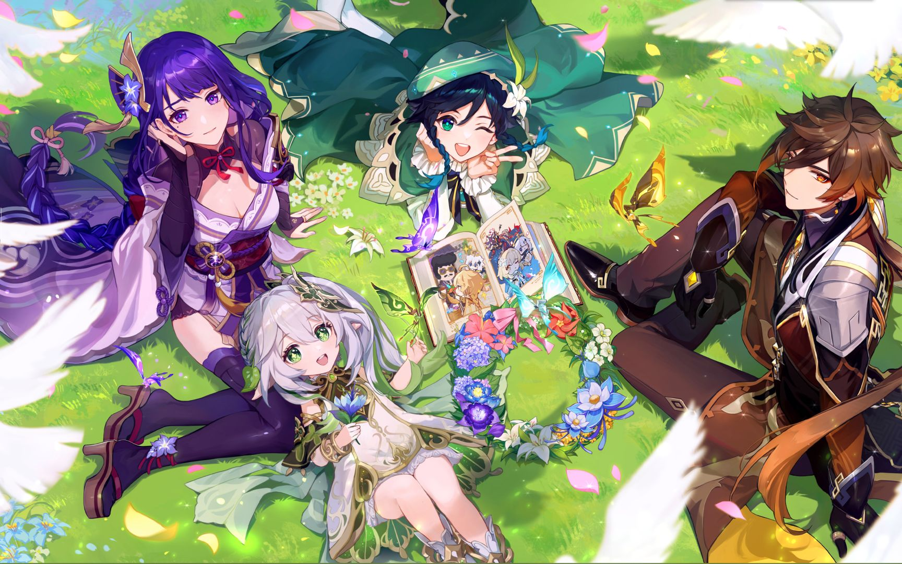

恐龙跳一跳
《恐龙跳一跳》是藏在Chrome浏览器里好多年的一个彩蛋。如果你还不知道这个彩蛋，可以抓紧试一试。将下列网址用Chrome浏览器打开即可chrome://dino。

黄金矿工
《黄金矿工》是一款益智类小游戏。该游戏中，可以通过“挖矿”获得积分并不断升级。玩家可以在线玩flash版黄金矿工，也可以下载后玩单机版黄金矿工。黄金矿工小游戏有多个版本，例如黄金矿工双人版、黄金矿工单人版等。

植物大战僵尸
《植物大战僵尸》是由美国宝开游戏公司(PopCap Games)开发的一款益智策略类塔防御战游戏，也是《植物大战僵尸》系列的第一部作品。
玩家通过武装多种植物切换不同的功能，快速有效地把僵尸阻挡在入侵的道路上。不同的敌人，不同的玩法构成五种不同的游戏模式，加之黑夜、浓雾以及泳池之类的障碍增加了游戏挑战性。

Q版泡泡堂
《Q版泡泡堂》，是一款经典的flash小游戏，主要以多吃道具，躲避危险，放泡泡把别的人物炸死，才能获得胜利作为游戏目标。

原神
《原神》是由上海米哈游网络科技股份有限公司制作发行的一款开放世界冒险游戏。
游戏发生在一个被称作“提瓦特”的幻想世界，在这里，被神选中的人将被授予“神之眼”，导引元素之力。玩家将扮演一位名为“旅行者”的神秘角色，在自由的旅行中邂逅性格各异、能力独特的同伴们，和他们一起击败强敌，找回失散的亲人——同时，逐步发掘“原神”的真相